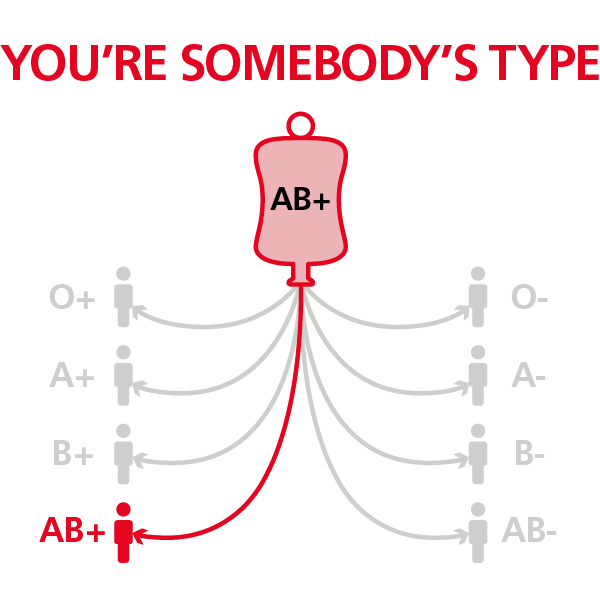
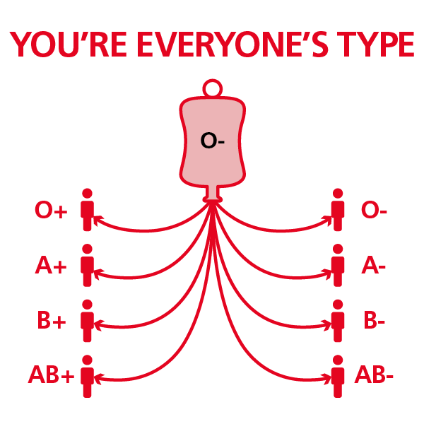

O+ red blood cells are not universally compatible to all types, but they are compatible to any red blood cells that are positive
People with A positive blood can receive donations from:
People with B positive blood can receive donations from:
Only AB positive people:
AB positive red blood cells can only be used to treat people with AB positive blood.
Everyone can receive O negative red blood cells
O negative donors are often called ‘universal donors’ because anyone can receive the red blood cells from their donations.
Although about 8% of the population has O negative blood, it accounts for around 13% of hospital requests for red blood cells.
Anyone can receive A negative platelets
A negative red blood cells can be used to treat around 40% of the population.
However, A negative platelets are particularly important because they can be given to people from all blood groups. That’s why A negative platelets are called the ‘universal platelet type’.

B negative blood can help people who are:
B negative people can receive red blood cells from:

It’s the rarest blood type
AB negative donations are extremely versatile, but because it is the rarest blood type finding new donors can be a challenge.
Plasma from AB negative donations can help treat patients of all blood types, however fresh frozen plasma is only produced from male donations.
You can receive AB negative red blood cells if you are: